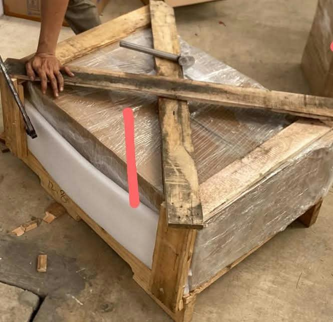

7 Jenis Barang yang Harus di Packing Kayu Biar Nggak Pecah & Nggak Rugi

Banyak yang kirim barang mahal, tapi cuma dibungkus kardus dan bubble wrap aja. Begitu sampai tujuan, barangnya retak, pecah, penyok. Rugi jutaan, klaim ribet, customer kecewa.
Padahal solusinya simpel: packing kayu. Packing kayu itu pelindung paling kuat buat barang yang gampang pecah, gampang penyok, dan harganya mahal.
Nah, di artikel ini Min kasih tau 7 jenis barang yang wajib banget di packing kayu kalau mau aman sampai tujuan.
📢 KABAR BAIK BUAT WARGA RANCAEKEK & BANDUNG!
Min nggak perlu repot packing kayu sendiri!
Di Lion Parcel Bandung POS101 Nanjungmekar, Min tinggal bawa aja barangnya, nanti tim Min yang bantu packing kayu-in di tempat. Min tinggal duduk, timbang, bayar, beres. Barang Min dijamin lebih aman, Min nggak perlu beli kayu, paku, dan palu sendiri.
Biaya packing kayu dihitung sesuai ukuran barang, tanya aja dulu ke WA, gratis kok konsultasinya.
Mau Kirim Barang Pecah Belah? Tanya Dulu Biaya Packing Kayu-nya
Kirim foto barangnya ke WA, Min hitungin estimasi packing kayu + ongkirnya.
💬 Chat WhatsApp 0851-8309-04861. Barang Pecah Belah & Keramik
Ini yang paling wajib. Piring keramik, gelas kaca, vas bunga, guci, piring hias, dan perlengkapan makan. Kena guncangan dikit aja langsung retak.
- Contohnya: Set piring keramik, gelas kristal, vas bunga, toples kaca
- Kenapa wajib kayu: Kardus doang nggak cukup nahan tumpukan barang lain di atasnya di gudang ekspedisi
2. Elektronik & Barang Berlayar
TV, monitor, komputer, printer, speaker, kulkas mini, mesin cuci, sampai mesin kopi. Selain pecah, elektronik juga rawan penyok dan layar retak.
- Contohnya: TV LED, monitor PC, printer, sound system, dispenser
- Kenapa wajib kayu: Packing kayu bikin barang nggak kegencet dan nggak goyang selama di perjalanan
3. Cermin, Kaca, dan Akuarium
Cermin rias, kaca meja, kaca jendela, dan akuarium itu paling rawan. Sekali retak, udah nggak bisa dipakai lagi.
- Contohnya: Cermin full body, kaca meja, akuarium ikan, etalase kaca
- Kenapa wajib kayu: Kayu melindungi sisi-sisi kaca yang paling gampang pecah kalau kebentur
4. Furniture & Barang Kayu Lainnya
Meja, kursi, lemari kecil, rak, sampai pintu. Furniture gampang lecet, penyok di pojok, dan sambungannya bisa goyang kalau cuma dibungkus kardus.
- Contohnya: Meja belajar, kursi jati, rak dinding, lemari pajangan
- Kenapa wajib kayu: Rangka kayu luar melindungi bentuk furniture tetap kokoh
5. Mesin, Sparepart & Perkakas Berat
Mesin motor, mesin jahit, dinamo, sparepart mobil, sampai perkakas bengkel. Barang berat kalau nggak di packing kayu, kardusnya jebol di jalan.
- Contohnya: Mesin motor, blok mesin, velg, dongkrak, genset kecil
- Kenapa wajib kayu: Kayu kuat nahan beban berat dan bikin barang nggak geser-geser
6. Barang Seni, Lukisan & Barang Antik
Lukisan, patung, barang antik, dan koleksi hobi itu harganya nggak bisa diganti. Sekali lecet, nilainya langsung turun drastis.
- Contohnya: Lukisan kanvas, patung resin, action figure koleksi, barang antik
- Kenapa wajib kayu: Packing kayu + bubble wrap di dalamnya bikin barang seni tetap presisi
7. Makanan & Minuman dalam Botol Kaca
Banyak seller madu, sirup, sambal botol kaca, dan parfum yang kirim pakai botol kaca. Kalau pecah, isinya tumpah dan ngerusak paket lain juga.
- Contohnya: Madu botol kaca, sirup, parfum, skincare botol kaca, sambal botol
- Kenapa wajib kayu: Melindungi botol dari benturan dan tekanan selama pengiriman
Kapan Barang Nggak Perlu Packing Kayu?
Kalau barangnya baju, hijab, sepatu, tas, buku, atau barang yang nggak gampang pecah, cukup pakai kardus + bubble wrap aja Min, nggak usah packing kayu, biar ongkirnya lebih hemat.
Tapi kalau Min ragu, Min tanya aja ke tim Min di counter. Nanti Min kasih tau, barang Min ini cukup bubble wrap aja atau wajib packing kayu.
📍 Lokasi Lion Parcel Bandung POS101 Nanjungmekar
Jl. Raya Barat Cicalengka RT 1 RW 1, Nanjung Mekar, Rancaekek, Kabupaten Bandung, Jawa Barat.
Kesimpulan
Jadi, kalau Min mau kirim barang pecah belah, elektronik, kaca, furniture, mesin, barang seni, atau botol kaca, wajib banget pakai packing kayu. Jangan ambil risiko kirim pakai kardus doang, ujung-ujungnya rugi sendiri.
Dan ingat Min, Min nggak perlu repot packing kayu sendiri. Tinggal bawa aja barangnya ke Lion Parcel Bandung POS101 Nanjungmekar Rancaekek, nanti tim Min yang packing kayu-in, Min tinggal terima beres. Lebih aman, lebih cepat, Min nggak capek.
Nama Agen: Lion Parcel Bandung POS101 Nanjungmekar Rancaekek
Jam Operasional: Senin–Minggu, 08.00–20.00 WIB
Alamat: Jl. Raya Barat Cicalengka RT 1 RW 1, Nanjung Mekar, Rancaekek, Kabupaten Bandung
WhatsApp: 0851-8309-0486